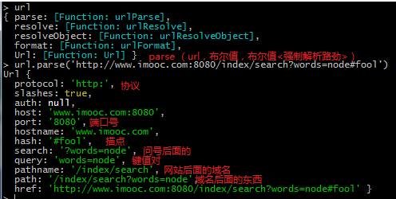
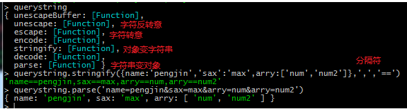

nodeJS和JS的异同 ECMAScript是差不多的如：数组，函数，日期那些内置对象等等 顶层对象js是window而NodeJS是global(Node里面是没有Window对象的)
//这些方法都一样
//var a = 100;
//console.log(a);
//
//var d= new Date();
//console.log(d.getFullYear());
//console.log(d.getMonth()+1);
var arr = [1,2,3];
arr.push(4);
console.log(arr);
function Pseron(name){
this.name = name;
}
Pseron.prototype.run = function(){
console.log(this.name+'runing')
}
var p1 = new Pseron("aa");
console.log(p1.name);
var p = 100;
console.log(global.p) //undefined 是不能反问的 模块概念
模块儿的使用 require('./2.js')，这里只有1个.
/*
模块加载方式
require('模块儿')
*/
require('./2.js');
路径的查找机制和顺序 文件名称 -> .js -> .json -> .node
/*
模块加载机制
路径问题:
1.绝对问题
*/
//require('D:/NodeJS/Modle/2.js');//绝对路径
//require('./2.js');//相对路径
/*
* 1.首先按照加载的模块的文件名称进行查找
* 2.如果没有找到，则会在模块文件名称后加上.js的后缀，进行查找
* 3.如果还没有找到，则会在文件名称后加上.json的后缀，进行查找
* 4.如果还没有，则会在文件名称后加上.node的后缀，进行查找
*
* 文件名称 -> .js -> .json -> .node
* */
//require('./2');
//require('./3');
模块加载参数的引用 module.exports.变量 1.把变量作为global对象的一个属性(不推荐,我们尽量减少这个全局变量的定义);2.使用1个模块对象，module对象
4.js
//require('./5.js');
var m5 = require('./5.js');//其实就是被加载模块当中的module.exports
//console.log(m5);
console.log(m5.a);
5.js
在一个模块中通过var定义的变量，其作用域范围是当前模块，外部不能直接的访问
如果我们想1下模块能访问另外1个模块定义的变量,可以：
1.把变量作为global对象的一个属性(不推荐,我们尽量减少这个全局变量的定义);
2.使用1个模块对象，module对象
*/
//var a = 100;
//global.a = 100;//不推荐
/*
module:保存提供和当前模块有关的一些信息
在这个module对象里面有1个子对象，exports对象，我们可以通过这个对象吧1个模块中的局部对象对外进行访问
*/
var a = 100;
module.exports.a = a;//这里就是把对象加载到了module.exports里面
exports.a = a;//是module.exports.a简写，因为exports是module对象里面的内置对象
//module.exports = [1,2,3]; //不要这样写
路径 __filename 返回当前解析绝对路径 __dirname 返回当前文件路径
console.log(__filename); //返回当前解析绝对路径 d:\NodeJS\Modle\_filename返回解析后绝对路径.js,该属性也不是全局的，而是模块作用域下的
console.log(__dirname); //d:\NodeJS\Modle,该属性也不是全局的，而是模块作用域下的
//时间demo
setInterval(function(){
var d = new Date();
console.log('现在是:'+ d.getFullYear()+'年'+ d.getMonth()+1+'月'+ d.getDate()+'日'+ d.getHours()+':'+ d.getMinutes()+':'+d.getSeconds())
},1000)
process对象 系统的一些信息,版本号,多少位,等等一系列的都可以通过process.访问到
console.log(process);
console.log(process.pid); //进程号
console.log(process.version);//版本号
console.log(process.title);//绝对路径
setTimeout(function(){//500毫秒关闭当前程序
process.exit()
},500)
//很多 很多 ，参考api
process对象标准输入 stdin 输出流 stdout process.stdin.resume();//开启输入流,默认情况输入流是关闭的
//用stdout实现 类似console.log的功能
//标准输入流
function Log(data){
return process.stdout.write(data);
}
//Log("你好")
//默认情况输入流是关闭的,要监听处理输入流数据，首先要开启输入流
process.stdin.resume();//开启输入流
//on事件，监听1下是否有数据传输
process.stdin.on('data',function(chunk){ //用户输入的数据就是函数里面的参数
if(!a){
a=Number(chunk);
process.stdout.write("请输入b的值");
}else
{
b=Number(chunk);
process.stdout.write("结果是:"+(a+b));
}
})
buffer buffer 用于二进制操作流以及它的三种new的方式,固定长度的，是不能增加其他值的,可改变 字符和字节length不一样 bf.write/ bf.toString()/ bf.toJson()/ bf.copy(bf4)/
//buffer 用于二进制操作流
//new Buffer(size);size[Number] 创建一个buffer对象，并为这个对象分配1个空间大小
//当我们为一个buffer对象分配空间大小以后，其长度是固定的不能更改
//var bf = new Buffer(5);
//console.log(bf);
//bf[6] = 100; //这里修改第六个的时候是不成功的 因为你的size已经固定
//console.log(bf);
//第二种方式 是传一个数组但是大小也是固定，也是不能改变大于size的值
//var bf = new Buffer([1,2,3]);
//console.log(bf);
//bf[6] = 100; //这里修改第六个的时候是不成功的 因为你的size已经固定
//console.log(bf);
//第三种方式就是，两个参数,第一个是字符串，第二个字符串指的是他编码方式
var bf = new Buffer('pengjin','utf-8');
console.log(bf);
for (var i = 0; i < bf.length; i++) {
//吧二进制变回字符串 String.fromCharCod
console.log(String.fromCharCode(bf[i])) //pengjin
}
//在英文的时候，字符的length和字节的length是一样的,但是在中文的时候，
// 字符的长度是不变的，但是中文字节是会变的，一般1个中文等于3个字节
var str1 = 'pengjin';
var bf1 = new Buffer(str1);
console.log(str1.length); //7
console.log(bf1.length); //7 一样
var str2 = '彭进';
var bf2 = new Buffer(str2);
console.log(str2.length); //2
console.log(bf2.length); //6 中文不一样
//buffer 对应的方法
/*
四个参数
bf.write(要写入的字符串,从buffer对象中第几位开始写入,写入字符串的长度,写入字符串的编码)
*/
//var str = 'pengjin';
//console.log(new Buffer(str));
//var bf = new Buffer(3);
////bf.write(str,1); //吧字符串写入到buffer对象的第一位开始算
//bf.write(str,1,3);// 从1位开始截取到第三位
//console.log(bf);
/*
bf.toString()字符编码,截取字符串从1开始,3结束,注意中文是三个字符,截取不对的话,首字符串会乱码
*/
//var bf = new Buffer('pengjin');
//console.log(bf.toString()); //吧接收到的对象变成字符串
//console.log(bf.toString('utf-8',1)); //字符编码,截取字符串从1开始截取
//console.log(bf.toString('utf-8',1,3)); //字符编码,截取字符串从1开始,3结束
/*
bf.toJson() //Json字节数组
*/
//var bf = new Buffer('pengjin');
//console.log(bf.toJSON());
//{ type: 'Buffer', data: [ 112, 101, 110, 103, 106, 105, 110 ] } //字节数组
var bf = new Buffer('pengjin');
console.log(bf);
/*
bf.slice() 片段截取xx.slice和 new Buffer差不多，但是可以参数截取,修改的时候会改变原有对象
*/
//var bf2 = bf.slice(); //.slice和 new Buffer差不多，但是可以参数截取
//var bf2 = bf.slice(2); //从第二位开始截取到最后
//var bf2 = bf.slice(2,4); //从第二位开始截取,一直到第四位之间
//console.log(bf2);
/*
bf.copy(bf4) //copy 拷贝字节，拷贝的字节，修改不会影响到原对象
*/
var bf4 = new Buffer(10);
bf.copy(bf4);//吧bf拷贝到bf4之中
bf.copy(bf4,1,2,4);//吧bf拷贝到bf4之中,从f4的第一位开始插入，拷贝的对象是原数据从第2位开始,第四位结束,不包含第4位
console.log(bf4);
Buffer的其他方法 Buffer.isEncoding是否支持某种编码 Buffer.isBuffer 是不是 Buffer对象 Buffer.byteLength字符串的字节长度,中文字节是英字节的三倍 Buffer.concat 合拼2个Buffer数组
/*
静态方法 ，类方法
Buffer.isEncoding //判断是否支持某种编码 返回true ，false
Buffer.isBuffer //判断当前对象是不是 Buffer对象 ，返回true ，false
Buffer.byteLength() //求一个字符串的字节长度,中文字节是英文字节的三倍
Buffer.concat //合拼2个Buffer数组，返回新数组
*/
//console.log(Buffer.isEncoding('utf-8')); ////判断是否支持某种编码
//var arr = [1,2,3];
//var bf = new Buffer(10);
//
//console.log(Buffer.isBuffer(arr));
//console.log(Buffer.isBuffer(bf)); //判断当前对象是不是 Buffer对象 ，返回true ，false
//Buffer.byteLength()方法,求一个字符串的字节长度,中文字节是英文字节的三倍
//var str1 = 'miaov';
//console.log(str1.length);
//console.log(Buffer.byteLength());//求一个字符串的字节长度,中文字节是英文字节的三倍
//Buffer.concat 合并2个字节数组
//var str1 = 'pengjin';
//var str2 = '彭进';
//var list = [new Buffer(str1),new Buffer(str2)];
//console.log(list);
//var bf = Buffer.concat(list);
//console.log(bf);
//其实process里面的stdout和stdin对象 也是Buffer
process.stdout.write("请输入内容:");//
process.stdin.resume();//开始默认关闭的输入流
process.stdin.on('data',function(chunk){
console.log(chunk);//字节
console.log(chunk.toString());//xx.toString()正常显示用户写的内容
console.log("输入的内容是:"+chunk); //字符串拼接，Node自动调toString这个方法
})
FileSystem fs模块,以及同步(open)和异步(require)的区别
//fs模块
var fs = require('fs');
/*
fs.open(path,flage,[mode],callback) //异步版
path:要打开文件的路径
flags :打开文件的方法 读/写
mode :设置文件模式 读/写/执行 4/2/1
callback :回调(两个参数);
参数1：err:文件打开失败的错误保存在err里面
参数2: fd：被打开文件的标识,和定时器一样 自增的
*/
fs.open('2.txt','r',function(err,fd){ //r只读
//console.log(err); //错误返回的对象
//console.log(fd); //
if(err){//失败
console.log("文件打开失败");
}else{
console.log("文件打开成功");
}
});
//同步和异步的区别 :异步，在执行1个程序的时候，程序会往下执行，而同步会阻塞，会等上一个执行完毕再执行
//异步的方式，open 会在执行当前的时候，不影响其他执行
//var fs = require('fs');
//fs.open('1.txt','r',function(err,fd){
// console.log(err);
//});
//
//console.log('ok');
//fs.openSync 同步是通过返回值进行操作的，因为他会阻塞
var fs = require('fs');
var fd = fs.openSync('1.txt','r');
console.log('fd');
fd(xx.open,回调函数的第二个参数)底层读取文件 fs.read(fd, buffer, offset, length, position, callback) 异步版本 fs.readSync同步版本，都一样只是没回调函数,通过返回值操作
var fs = require('fs');
fs.open('1.txt','r',function(err,fd){
if(err){
console.log("文件打开失败");
}else
{
//读取文件
/*
* fs.read(fd, buffer, offset, length, position, callback)
* fd : 通过open方法成功打开一个文件返回的编号
* buffer : buffer对象
* offset : 新的内容添加到buffer中的起始位置
* length ： 添加到buffer中内容的长度
* position ：读取的文件中的起始位置
* callback : 回调
* err
* buffer的长度
* buffer对象
* */
var bf1 = new Buffer(10);
console.log(bf1);
//bf1，就是buffer对象 ,0 就是往buffer对象里面0位开始添加，添加4位,null，就是从1.text文件的0位开始读取
//回调函数 err 出错 length Buffer对象的长度 ,newBf 对Buffer对象修改后的引用
fs.read(fd,bf1,0,4,null,function(err,length,newBf){
console.log(bf1);
console.log(length); //Buffer对象的长度
console.log(newBf); //对Buffer对象修改(插入)后的引用
console.log(newBf.toString());
});
}
});
对文件进行写操作 r+读写操作 fs.close();//关闭这个文件
var fs = require('fs');
fs.open('1.txt','r+',function(err,fd){
/*
* 当我们要对打开的文件进行写操作的时候，打开文件的模式应该是 读写 方式r+
*
* fs.write(fd, buffer, offset, length[, position], callback)
* fd : 打开的文件
* buffer : 要写入的数据
* offset : buffer对象中要写入的数据的起始位置
* length : 要写入的buffer数据的长度
* position : fd中的起始位置
* callback : 回调
* */
if(err){
console.log("读取失败")
}else
{
//var bf = new Buffer("123");
////fd,open回调函数第二次参数,bf,创建的bf对象,从fd对象的0字节位开始,添加三位,从xx.text 第4的字节位置开始写入,回调
//fs.write(fd,bf,0,3,4,function(){
// console.log(arguments);
//})
//第二种写入模式,fd对象,写入的字符串,从txt的第四位开始写,编码是utf-8,有回调函数
fs.write(fd,'1234',12,'utf-8');//编码后面可以有回调函数
fs.close();//关闭这个文件,关闭之后无法继续操作 可以传入2个参数,fn和回调
//fs.close(fd,回调函数); 可以传入2个参数,fn和回调
}
})
高级点的文件操作方法 判断文件是不是存在 fs.exists fs.writeFile 创建个文件,如果文件有就替换,没有就创建他//fs.appendFile在该文件尾部追加内容,文件不存在则创建
var fs = require('fs');
var filename = '3.txt';
//fs.writeFile 创建个文件,如果文件有就替换,没有就创建他, 'hello'第二个参数可以是字符串也可以是buffer对象,回调
//fs.writeFile(filename,'hello',function(){
// console.log(arguments);
//})
//同步对象,不需要回调函数
//fs.writeFileSync(filename,'hello');
//fs.appendFile在该文件尾部追加内容,文件不存在则创建
//fs.appendFile(filename,'-->我的添加的内容',function(){
// console.log(arguments);
//})
//判断文件是不是存在 fs.exists(路径,回调函数) //异步模式
//fs.exists(filename,function(isexists){
// if(!isexists){ //文件不存在
// fs.writeFile(filename,'pengjin',function(err){
// if(err){//有错误
// console.log("出错误了");
// }else
// {
// console.log("创建新文件成功!");
// }
// })
// }else //文件存在
// {
// fs.appendFile(filename,'pengjin-存在',function(err){
// if(err){
// console.log("新的内容追加失败")
// }else
// {
// console.log("新内容追加成功");
// }
// })
// }
//})
//同步模式
if(!fs.existsSync(filename)){
fs.writeFileSync(filename,'mive');
console.log("新文件创建成功")
}else
{
fs.appendFileSync(filename,'创建的文字')
console.log("新内容追加成功")
}
高级方法2//读取文件 fs.readFilefs.unlink删除一个文件//fs.rename 文件重命名//fs.stat文件状态 ,里面包含了文件的创建,修改时间 size 等属性信息fs.watch 监听文件发生改变的方法
var fs = require('fs');
var filename = '1.txt';
//读取文件 异步fs.readFile, 同步readFileSync
//fs.readFile('2.txt',function(err,data){
// if(err){
// console.log("文件读取失败");
// }else
// {
// console.log(data.toString());
// }
//})
//
//fs.unlink删除一个文件 文件名,回调 unlink异步,同步unlinkSync
//fs.unlink('3.txt',function(err){
// if(err){
// console.log("删除失败");
// }else
// {
// console.log("删除成功");
// }
//})
//
//fs.rename 文件重命名
//fs.rename('2.txt','2.new.txt',function(){
// console.log(arguments);
//})
//fs.stat文件状态 里面包含了文件的创建,修改时间 size 等属性信息
//fs.stat('1.txt',function(){
// console.log(arguments);
//})
// fs.watch 监听文件发生改变的方法 ,//参数1:事件,change 值发生改变,rename名称改变等
fs.watch(filename,function(ev,fn){
console.log(ev);//事件,change 值发生改变,rename名称改变等
if(fn){//改变了
console.log(fn+'发生了改变');
}else
{
console.log('...');
}
})
根据node 文件自动化创建工具 html常用文件夹的创建 js css img index.html等
var projectData = { //数据
'name' : 'miaov',
'fileData' : [
{
'name' : 'css',
'type' : 'dir'
},
{
'name' : 'js',
'type' : 'dir'
},
{
'name' : 'images',
'type' : 'dir'
},
{
'name' : 'index.html',
'type' : 'file',
'content' : '<html>\n\t<head>\n\t\t<title>title</title>\n\t</head>\n\t<body>\n\t\t<h1>Hello</h1>\n\t</body>\n</html>',
}
]
};
var fs = require('fs'); //模块儿
if ( projectData.name ) {//存在的时候
fs.mkdirSync(projectData.name); //创建1个文件夹
var fileData = projectData.fileData;//得到数据
if ( fileData && fileData.forEach ) { //存在的时候
fileData.forEach(function(f) {//遍历data数据
f.path = projectData.name + '/' + f.name; //得到在projectData.name下面的路径
f.content = f.content || ''; //内容存在的时候
switch (f.type) {
case 'dir': //是dir的时候就创建文件夹
fs.mkdirSync(f.path);
break;
case 'file': //是file的时候就创建文件,写入内容
fs.writeFileSync(f.path, f.content);
break;
default :
break;
}
});
}
}
自动化构建项目管理工具 监听改变自动化合并工具原理
var fs = require("fs"); //fs模块
var filedir = './pengjin/source'; //路径
fs.watch(filedir,function(ev,file){ //监听下面文件
//只要有一个文件发生了变化，我们就需要对这个文件夹下的所有文件进行读取，然后合并
fs.readdir(filedir,function(err,dataList){ //读取下面的文件
var arr = [];
console.log(dataList);
dataList.forEach(function(f){
var info = fs.statSync(filedir+'/'+f);
if(info.mode == 33206){//如果是文件
arr.push(filedir+'/'+f);吧他的路径存入arr数组里面
}
})
//console.log(arr);
//读取数组中的内容，并合并
var content = ''; //内容
arr.forEach(function(f){ //遍历数组
var c = fs.readFileSync(f);
content +=c.toString()+'\n';
});
//创建1个文件夹吧content放在文件夹里面
fs.writeFile('./pengjin/source/js/index.js',content);
})
});
http模块儿 xx.listen监听那个网卡进来的数据error事件端口被占用,在请求失败的时候触发 listening事件，在service调用端口成功后触发的事件request事件，有客户端请求的时候触发事件
//搭建一个http的服务器，用于处理用户发送的http请求,需要使用1个node提供的http模块
//加载1个http模块儿
var http = require('http');
//通过htto模块下的createServer创建一个并返回1个web服务器对象
var service = http.createServer(); //service就是服务器对象
//error事件，端口被占用,在请求失败的时候触发
service.on('error',function(err){
console.log(err);
});
//listening，在service调用端口成功后触发的事件
service.on('listening',function(err){
console.log("listening...成功了");
});
//request，有客户端请求的时候触发事件
service.on('request',function(err){
console.log("有客户端请求了..");
});
//listen..监听那个网卡进来的数据 端口号,'服务器'
service.listen(8080,'localhost');
console.log(service.address());//服务的信息

get post 提交数据和后台的交互方式 querystring 处理字符串变对象 后台根据不同的页面请求，处理不同的数据
//通过fs http url 3个模块儿 表示行为分离
var http = require('http'); //http service服务对象
var fs = require("fs");//文件对象
var url = require("url"); //拆分url变成对象
var querystring = require("querystring");//处理字符串变对象，对象变字符串等
var server = http.createServer();
var htmlDir = __dirname+'/html/';
console.log(htmlDir);
server.on('request',function(req,res){
//console.log(req.url);//用户访问路径 ?后面的东西，一般是查询字符串
var urlStr = url.parse(req.url); //parse url模块里面的一个方法，吧url解析成1个个对象
//监听url里面的pathname对象
switch (urlStr.pathname){
case '/':
sendData(htmlDir+'index.html',req,res);
break;
case '/user':
sendData(htmlDir+'user.html',req,res);
break;
case '/logo':
sendData(htmlDir+'logo.html',req,res);
break;
case '/logo/check':
console.log(req.method); //判断用户请求的是get还是post
//GET方式提交的数据可以直接被解析，我们可以直接得到用户传输过来的东西
//console.log(querystring.parse(urlStr.query));//吧字符串变对象，GET处理数据的方式
//但是POST呢，他的数据被存到了缓冲区中，我们要从缓冲区（buffer）里面拿到数据
if(req.method.toUpperCase()=='POST'){//只允许POST提交
var str = '';
req.on('data',function(chunk){ //post提交的数据，保存到了chunk这个参数中
str+=chunk; //吧参数放入str这个变量中
})
req.on("end",function(){//等数据加载完之后(很重要读取传输数据需要添加在这个里面)
console.log(querystring.parse(str));
})
}
break;
default :
sendData(htmlDir+'err.html',req,res);
break;
}
});
function sendData(file,req,res){
fs.readFile(file,function(err,data){
if(err){
res.writeHead(404,{
'content-type':"text/html;charset=utf-8"
})
res.end("页面被吃掉了");
}else
{
res.writeHead(200,{
'content-type':"text/html;charset=utf-8"
})
res.end(data);
}
})
}
server.listen(8082,'localhost');

NodeJS事件对象 绑定 on 和也可以addEventListener可以绑定 删除事件removeListener（单一）removeAllListeners(所有)xx.emit监听事件XX.setMaxListeners(11);//设置事件监听的动作(默认是10)
var EventEmitter = require('events').EventEmitter;
var life = new EventEmitter();
life.setMaxListeners(11);//设置事件监听的动作(默认是10)
function wrad(who){
console.log('给'+who+'到手');
}
//绑定事件.on 也可以addEventListener可以绑定
life.on('事件名称',wrad)
//但是删除事件是不能删除有回调函数的事件的,必须是wrad这样的函数名调用才可以
life.removeListener("事件名称",wrad);//移除一个事件
life.removeAllListeners();//移除所有的事件(如果传参数的话，只移除事件参数的那个函数)
//life.emit(事件名称,'xx有参数就传可以没有') 监听1个事件
life.emit('事件名称','JJ');
//查询被监听的函数个数
console.log(life.listeners('事件名称').length);
//如何知道事件被监听
var mark = life.emit('事件名称','JJ')
console.log(mark); //根据返回的true false 监听